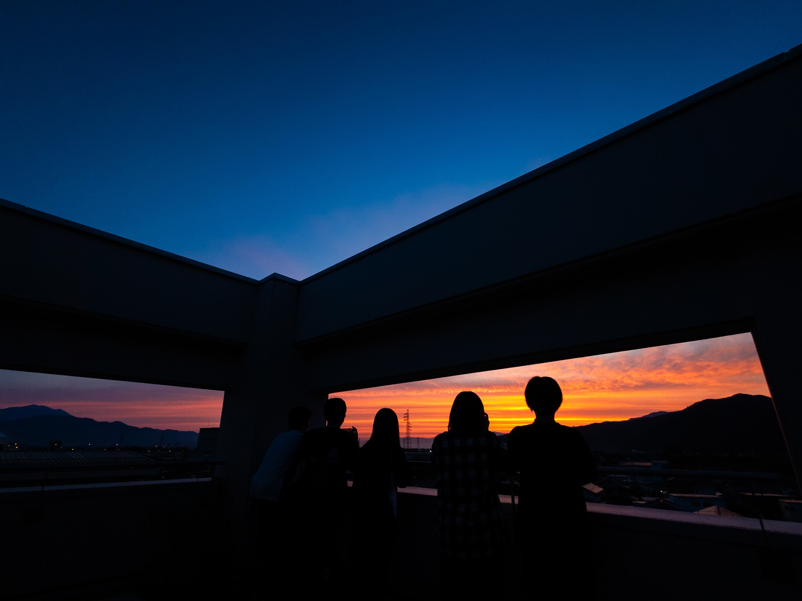

屋代高校 天文班について

沿革
1931
天体観測活動の始まり
数学の宮下教諭が天体望遠鏡を屋代高校に寄贈。運転時計付き赤道儀を装置した五藤式三吋望遠鏡は全国的に見ても珍しく、当時の交友会誌に「実に吾校の宝とも云はねばならぬ」と記されている。
数学の宮下教諭が天体望遠鏡を屋代高校に寄贈。運転時計付き赤道儀を装置した五藤式三吋望遠鏡は全国的に見ても珍しく、当時の交友会誌に「実に吾校の宝とも云はねばならぬ」と記されている。
1933
天文同好会として創部
望遠鏡の寄贈を皮切りに、屋代高校天文班が「天文同好会」として正式に誕生した。
望遠鏡の寄贈を皮切りに、屋代高校天文班が「天文同好会」として正式に誕生した。
1951
初代ドーム完成
望遠鏡のドームが完成。冬季の工事であったため、工事に苦心したと記録に残る。
望遠鏡のドームが完成。冬季の工事であったため、工事に苦心したと記録に残る。
1967
設備更新への声
当時の鳩陵に「予算の関係上器具類は乏しく、せめて望遠鏡だけでも、もっといいものがあれば」と記されるなど、部員たちの切実な声が高まった。
当時の鳩陵に「予算の関係上器具類は乏しく、せめて望遠鏡だけでも、もっといいものがあれば」と記されるなど、部員たちの切実な声が高まった。
1992
現在の天文ドーム完成
県下の高校では最大級の天文ドームが完成。カラーステンレス平葺、直径4.5m、スリット開口幅1.3mという本格的な設備。口径150mm・焦点距離1.8mの屈折型望遠鏡・赤道儀も同時設置され、現在に至る。
県下の高校では最大級の天文ドームが完成。カラーステンレス平葺、直径4.5m、スリット開口幅1.3mという本格的な設備。口径150mm・焦点距離1.8mの屈折型望遠鏡・赤道儀も同時設置され、現在に至る。
現在
約60名が活動中
初心者から経験者まで幅広いメンバーが在籍。月例合宿・公開観測会・地域連携事業など、多彩な活動を展開している。
初心者から経験者まで幅広いメンバーが在籍。月例合宿・公開観測会・地域連携事業など、多彩な活動を展開している。
主な活動
- 月例天文合宿 — 毎月金曜〜土曜に学校天文ドームで実施
- 戸隠夏合宿 — 年に一度の大型合宿（7月下旬・1泊2日）
- 公開星空観測会 — 地域市民・小中学生向けイベントの企画・運営
- 鳩祭展示 — 学園祭でのプラネタリウム上映・天文展示
- 研究発表 — 県高校文化祭での研究成果発表
- 地域交流事業 — 小中学校への出張天文教室
設備・機材
| 機材名 | 仕様 | 主な用途 |
|---|---|---|
| 天文ドーム | 直径4.5m・スリット開口幅1.3m・自動回転式 | 本格的な天体観測 |
| 主力望遠鏡 | 口径150mm・焦点距離1.8m 屈折式 / 赤道儀搭載 | 惑星・月面・星雲観測 |
| 中型屈折望遠鏡 | 最大倍率約150倍 / 赤道儀付き | 合宿・観測会での機動的観測 |
| 中型反射望遠鏡 | 口径30cm | 合宿・観測会での観測 |
| 双眼鏡 | 各種複数 | 星座学習・彗星観測 |
| デジタル一眼レフ | 各種複数台 | 天体写真・タイムラプス撮影 |
| プラネタリウム | 小型投影機 | 鳩祭・地域イベント |
年間スケジュール
月例合宿は毎月実施。以下は代表的な年間行事です。
4月
- 新入班員歓迎会
- 天体観測
5月
- 月例天体観測
6月
- 月例天体観測
- 鳩祭準備
- 文化班展示
7月
- 月例天体観測
- 戸隠夏合宿
8月
- 公開星空観測会
- 天体観測
9月
- 月例天体観測
10月
- 月例天体観測
11月
- 月例天体観測
12月
- クリスマス合宿
- 月例天体観測
1月
- 月例天体観測
2月
- 天体観測
- 新年度準備
3月
- 月例天体観測
- 新入生勧誘準備
入班をお考えの方へ
天文班では随時新入班員を募集しています。知識や経験は一切問いません。「星が好き」「宇宙が気になる」という気持ちさえあれば大歓迎です。
まずは気軽にご連絡ください。見学も随時受け付けています。